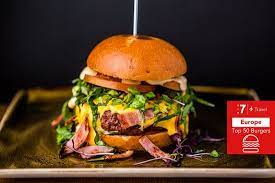

A burger is a flat round mass of minced meat or vegetables, which is fried and often eaten in a bread roll.
W Shortened in length, the term Burger is used to describe a popular sandwich made from ground meats that are formed into a patty, cooked, and placed between two halves of a bun. Although the most common Burger is made with meat, there are many alternatives that do not include meat, such as tofu or ground vegetables.
In a bowl, mix ground beef, egg, onion, bread crumbs, Worcestershire, garlic, 1/2 teaspoon salt, and 1/4 teaspoon pepper until well blended. Divide mixture into four equal portions and shape each into a patty about 4 inches wide.
Lay burgers on an oiled barbecue grill over a solid bed of hot coals or high heat on a gas grill (you can hold your hand at grill level only 2 to 3 seconds); close lid on gas grill. Cook burgers, turning once, until browned on both sides and no longer pink inside (cut to test), 7 to 8 minutes total. Remove from grill.